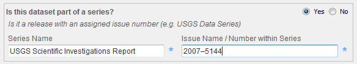
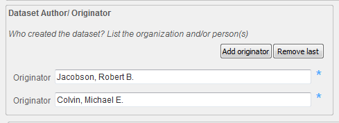
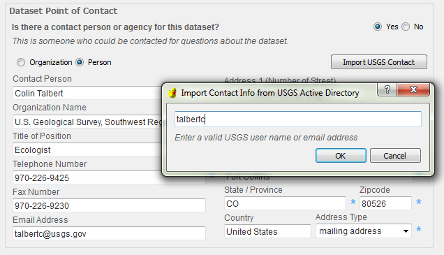

Using the Metadata Wizard
Sections
The Metadata Wizard uses a series of forms/tabs where the user will enter information about a dataset. These tabs are broken down categorically into sections that roughly correspond to the sections in an FGDC metadata record.
Identification : What the data is, who created it, associated publications, when it was created, etc.
Data Quality : How was the data created (methodology), what sources were used, what quality control was used.
Spatial : Where is the data geographically, what spatial projection or reference is it in, how is it organized spatially.
Entity and Attribute : How is the data organized tabularly, what is in each of the field attributes, the unit of measure for applicable field attributes, etc.
Distribution : Information on how would one would obtain the data.
Metadata Reference : Who made the metadata record, when, what standard was used.
Filling Out a Record
Cycle through each of the metadata sections (represented as tabs) by clicking on the blue labels across the top of the application. On each tab, enter appropriate content into the text boxes and select the appropriate information located in dropdown boxes. The content on each tab corresponds to FGDC CSDGM elements, which often have hints below the element titles that help to identify the appropriate content. Items marked with a blue * are required to be filled out.
Expanding a Collapsed Element

Some compound metadata elements are hidden until the Yes radio button is checked. For example, if the data is part of a series the user will want to record the series name and number in the Citation section on the Identification tab. These will not be visible until the user checks the Yes button corresponding to the question Is this dataset part of a series?. If compound metadata elements are not needed, the user should click the No button to help the metadata record pass validation by limiting empty metadata elements. More information on validation is here.
Adding or Removing Items in a List (Repeating Elements)

Elements that can be repeated multiple times, for example, authors, keywords, and online linkages, have buttons for adding or removing elements.
Using Tools to Auto-Populate Compound Elements

Some elements contain convenience tools for populating their content which are launched by clicking the button in that section. For example, contact information for USGS users can be populated by clicking the Import USGS Contact button in a contact section, and entering their Active Directory (a directory service developed for Microsoft Windows domain networks) username.
Other tools include adding keywords from controlled vocabularies, populating a citation section from an active Digital Object Identifier (DOI), and generating a taxonomy section from the Integrated Taxonomy Information Service (ITIS). These tools all require internet access to function properly.